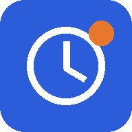

把加班记录装到手机
上班、加班分别记 · 离线可用 · 多设备同步
安卓手机 v1.3.1
同步网页最新界面：多设备同步可展开、收起，设置页面更简洁，底部显示当前版本。支持在 App 内检查和下载更新。
下载安卓版 v1.3.1已安装旧版：直接打开新版安装包，选择更新或覆盖安装，原有记录和同步连接会保留。请勿先卸载。这次覆盖安装后，后续可在 App 内收到更新提示。
适用于安卓 7.0 及以上。若手机询问，可允许当前浏览器安装此应用；安装完成后可关闭该权限。
苹果手机
用 Safari 添加到主屏幕，之后点桌面图标打开。联网会获取新版；出现「新版已就绪」时，点「立即更新」即可。
打开程序，再添加到主屏幕- 在 Safari 中打开程序。
- 点「分享」→「添加到主屏幕」。
- 若出现「作为网页 App 打开」，将它开启，再点「添加」。
接回已有记录
- 先在原来的设备或网页中打开「设置 → 多设备同步」。尚未开启时，先开启并等待「已同步」。
- 点「连接另一台设备」，保存同步码。
- 在新安装的程序中打开设置，粘贴原同步码并连接。
网页和安装版可能使用各自的本机存储。安装后记录为空时，用原同步码连接，已有数据就能同步过来。
同步码请私下保留；也可在「备份与恢复」中导出一份备份。